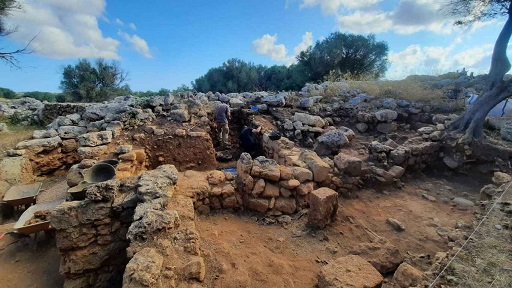

|
MALLORCA y MENORCA
Pol·lèntia es la única ciudad romana que se puede visitar actualmente en Mallorca. Fue fundada por Quinto Cecilio Metelo en el año 123 a.e.c. sobre un antiguo poblado talayótico. La mayoría de sus restos son de época imperial.Según algunos documentos que hablan de una luz en Pol·lèntia, en esa época se debió construir el primer faro de la isla. Se desconoce el emplazamiento exacto, pero se sabe que el faro se instaló en el lado orientado hacia Roma. En el siglo III con la crisis económica se redujo su perímetro y la construcción de una muralla. Con la caída del Imperio desaparece como núcleo.
Las excavaciones de Pol·lèntia se iniciaron hacia 1920. La parte visitable comprende un pequeño fragmento de
muralla, ruinas de tres domus y una calle porticada. Se accede al conjunto
por Sa Portella.
El acceso a Pol·lèntia está en Sa Portella, barrio situado en el extremo noroeste de Alcúdia. El puerto de la ciudad romana de Pol·lèntia en Alcúdia ha sido localizado a unos metros de la que se conoce popularmente como la rotonda ‘del caballo’. Descubren junto a la Font dels Molins de Son Servera una villa tardorromana excepcional. Conserva los muros de unos baños construidos antes del siglo V. En junio de 2019, se halla en la playa un barco de 10 metros de eslora y cinco de ancho, que posiblemente naufragó entre los siglos III y IV. En septiembre de 2019, son rescatadas las cerca de cien ánforas del barco romano hundido frente a Can Pastilla. En febrero de 2020, las obras del gas en una calle de Alcúdia destapan los restos de una habitación romana.
MENORCA Destaca el yacimiento de Son Catlar. En junio de 2021, descubren un espectacular depósito militar romano con armas y herramientas quirúrgicas, datado en el 100 a.e.c. Probablemente fue enterrado como parte de un rito de sellado de una puerta del yacimiento talayótico. Foto: www.elespanol.com

|
| CIUDADES HISPANIA | TOPÓNIMOS |